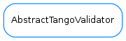

AbstractTangoValidator¶

-
class
AbstractTangoValidator[source]¶ -
complete_name= None¶
-
getNames(str, factory=None)[source]¶ Returns a tuple of three elements with (complete_name, normal_name, short_name) or None if no match is found
-
normal_name= None¶
-
protocol_prefix= 'tango://'¶
-
short_name= None¶
-
tango_word= "[^\\:\\/\\?\\#\\[\\]\\@\\!\\$\\&'\\(\\)\\*\\,\\;\\=]+"¶
-
uri_gen_delims= '\\:\\/\\?\\#\\[\\]\\@'¶
-
uri_reserved= "\\:\\/\\?\\#\\[\\]\\@\\!\\$\\&'\\(\\)\\*\\,\\;\\="¶
-
uri_sub_delims= "\\!\\$\\&'\\(\\)\\*\\,\\;\\="¶
-